Discoveries #13
This month, Discoveries is all about JavaScript-driven “components” that you can quickly and easily add to your own website to enhance it. Be it with a simple code viewer or an ingenious print function or simply to display or filter photos. Go on a journey of discovery…
- indiepen
- Panzoom
- guggenheim.js
- Lazy Loading Mosaic Tiling Plugin
- ScrollTrigger
- WinBox.js
- Print.js
- Simple Text Annotations
- Clicky Menus!
- Responsive Dropdown Menu (Vanilla Navbar Menu)
- Smooth-side-bar
- Podtablejs
indiepen
by Hendrik and André from yetanother.bloghttps://indiepen.tech/
indiepen is a solution for showing code samples without the need of a code sharing platform, like codepen. Just reference a index.html, main.js and styles.css from wherever you want and indiepen is wrapping it with a neat viewer inside an IFrame.
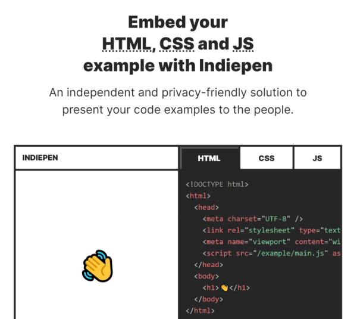Panzoom
by Cesar Morillashttps://github.com/cmorillas/panzoom
Implementing panning and zooming with JavaScript is not the easiest thing. Cesar has done all he work by creating this tiny ES6 module. It works both on a smartphone and in a desktop browser via mouse wheel. It is nearly perfect to zoom into an image to show its details.
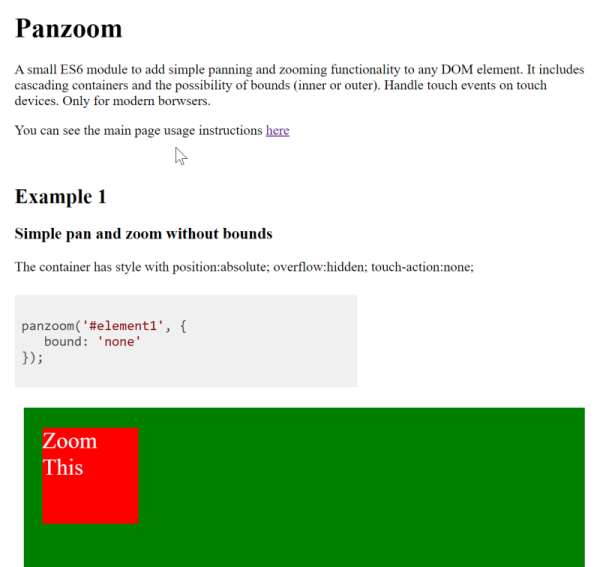Lazy Loading Mosaic Tiling Plugin
by Christopher Pelosohttps://github.com/cspeloso/Lazy-Loading-Mosaic-Tiling-Plugin
Do you have a bunch of images you want to show in a masonry layout on your website? Whith Chris’ JS library it’s just a one-liner. It supports responsiveness and lazy-loading in tiny 132 lines of JS code and 4 CSS classes. Amazing!
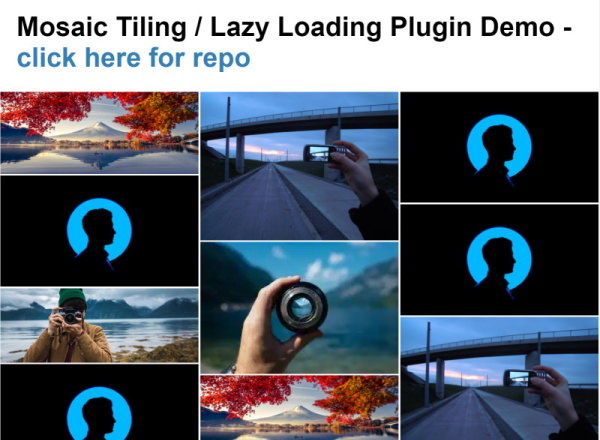guggenheim.js
by Will McKenziehttp://oinutter.co.uk/guggenheim.js/
Another approach on showing images in a gallery is Guggenheim.js. It’s not responsive, but has sophisticated filtering options. Perfect for quickly finding a keyworded photo.
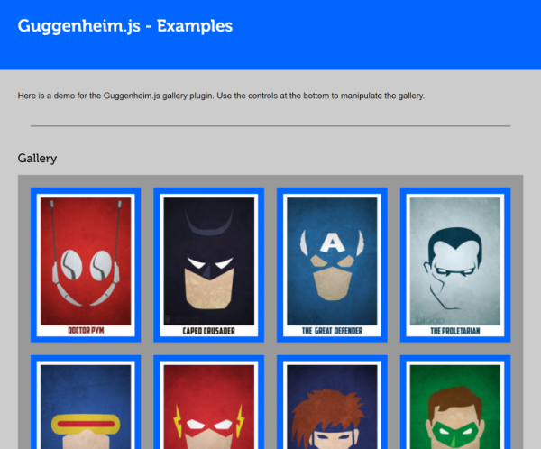ScrollTrigger
by Greensock Inc.https://greensock.com/scrolltrigger/
Greensocks ScrollTrigger is unparalleled among scroll animation libraries. Based on its own GSAP library, ScrollTrigger can animate almost everthing, when the user is scolling through a website. Want to see it in action? Visit their demo page with dozens of examples…
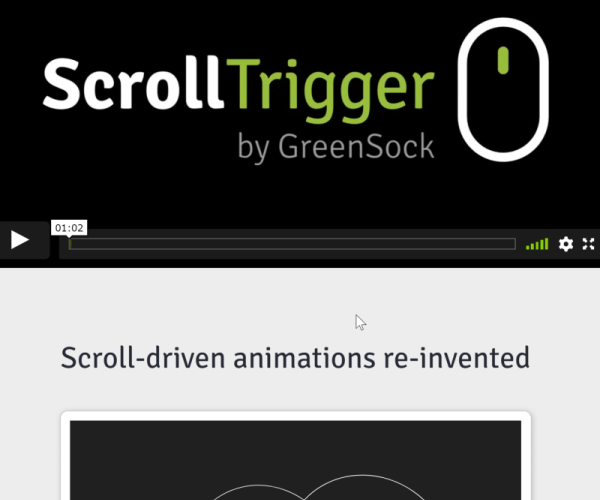WinBox.js
by Nextapps GmbHhttps://nextapps-de.github.io/winbox/
The guys from Nextapps have created a JavaScript library to show windows on a website. It’s window manager has features like minimize, maximize, move, resize, fullscreen and much more. Always wanted to recreate Windows 3.11? Let’s go …
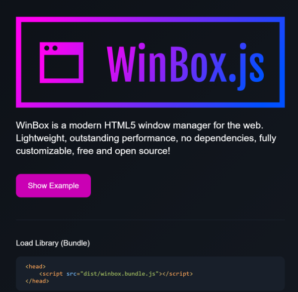Print.js
by Rodrigo Vieirahttps://printjs.crabbly.com/
Print.js is a library, that helps you printing anything, which can be shown in a browser. Primarily written to print PDF, it supports now also HTML (including forms), JSON and all sorts of images, even multiple. It formats the wanted content if needed and shows up the browsers print dialog. Pretty neat.
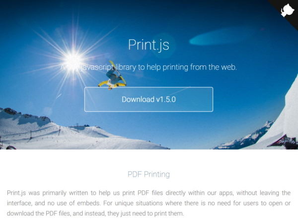Simple Text Annotations
by Jacek Jarczokhttps://github.com/k-son/simple-text-annotations
Some texts on websites require commenting. Jacek has developed a simple and elegant solution for such annotations, that works on any device without any dependencies.
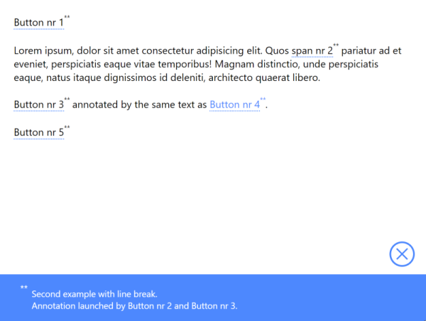Clicky Menus!
by Mark Root-Wileyhttps://github.com/mrwweb/clicky-menus
Mark has created a one-level dropdown navigation menu, which is fully accessible, either by mouse click, touch or keyboard. It supports all Modern Browsers such as Firefox, Chrome, Edge, and even the “new IE” Safari.
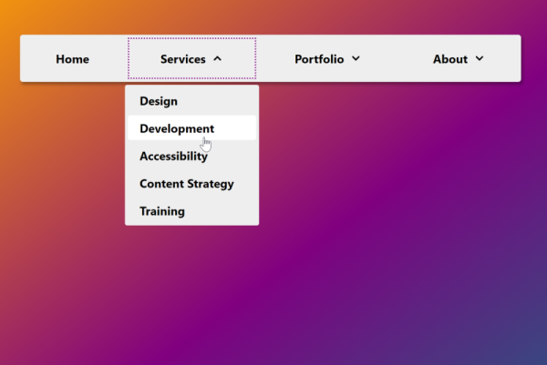Responsive Dropdown Menu (Vanilla Navbar Menu)
by Rizalhttps://github.com/therizaldev/vanilla-navbar-menu
This classic responsive sidebar from Rival is beautifully solved with CSS and just a little JavaScript. See the demo …
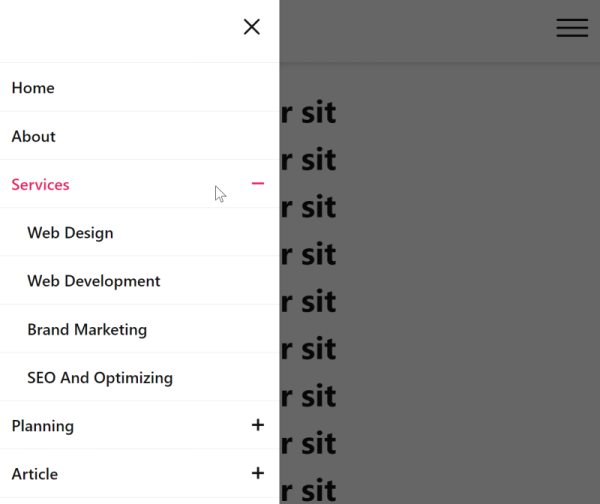Smooth-side-bar
by Pham Quang Huyhttps://github.com/dunbom6612/smooth-side-bar
This sidebar solution from Pham Quang Huy recalls the sidebars Microsoft, Atlassian and others are using in their dashboards. You can fold/unfold them in order to show menu details or the icons only. See the demo …
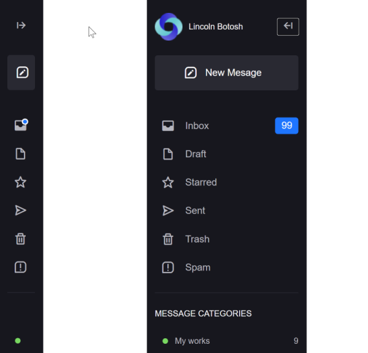Podtablejs
by Afuwape Sundayhttps://github.com/inlogicstudio/podtable
Podtable is a library to make tables responsive to fit smaller devices. It shows as many columns as possible and hides all others behind a detail button to show them in a separate row if needed. It has no dependencies and varius options to customize the behaviour. See the demo …
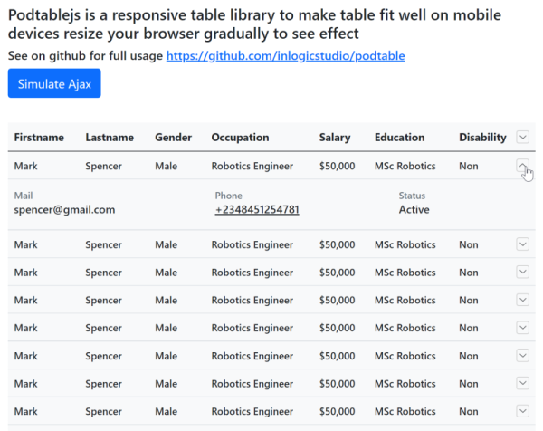You can interact with this article (applause, criticism, whatever) by mention it in one of your posts, which will be shown here as a Webmention, or by leaving a good old comment with your GitHub account.
Webmentions
No Webmentions yet...
In case your blog software can't send Webmentions, you can use this form to submit me a mention of this article...


Comments